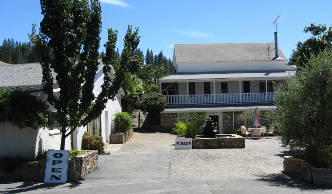

|
North America >
USA >
California >
Amador >
Sobon Estate

Sobon Estate
Plymouth, CA
www.sobonwine.com
$5 Rezerve tasting includes a glass also good for the ReZerve tasting at their sister winery,
Shenandoah Vineyards.
Vintages:
Amador County Roussanne
2008
Amador County Viognier
2008
Amador County ReZerve Rosé
2008
Amador County ReZerve Primitivo
2007
Amador County Sangiovese
2007
Amador County Syrah
2007
Amador County Zinfandel Cougar Hill
2007
Amador County Zinfandel Old Vines
2005
2007
Amador County Zinfandel Rocky Top Vineyard
2006
2007
Fiddletown Zinfandel
2007
Amador County ReZerve Zinfandel
2006
Vicious Red California
2007
Amador County Zinfandel Port
2007
Amador County ReZerve White Port
2007
|